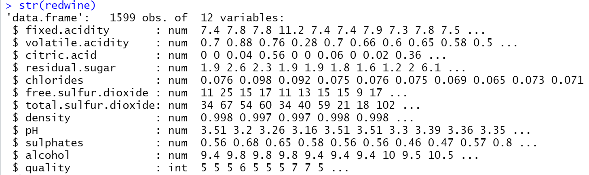
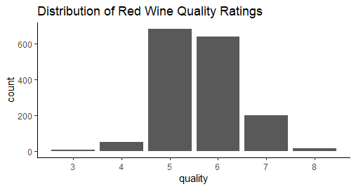
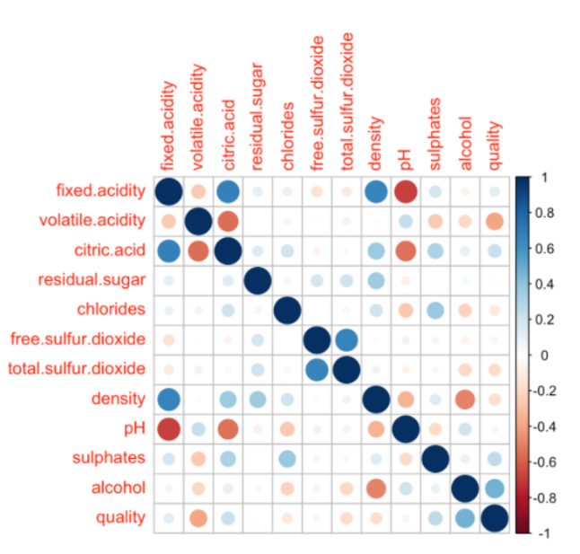
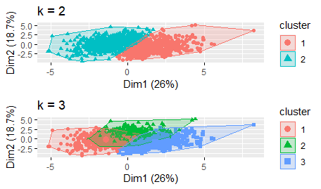
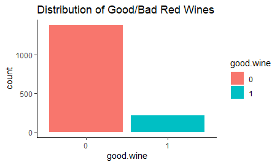
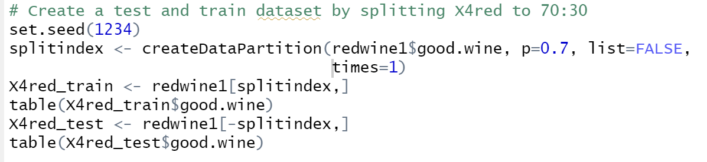
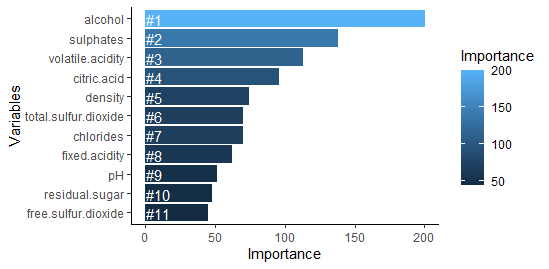

Ever thought what makes your wine taste so good? Did you know how industry players are using product quality certifications to promote their products? This is indeed a time consuming and expensive process as it requires assessment given by human experts. But if the human quality of tasting can be related to wine’s chemical properties such as acidity, pH level, sugar etc., then the certification and quality assessment and assurance processes can be more controlled.
Through this project I will be focusing to answer these main questions:
The dataset is obtained from UCI machine learning repository and contains a total of 12 variables, which were recorded for 1,599 observations. Knowing the impact of each variable in determining the red wine quality will help producers, distributors, and businesses in this industry better assess their production, distribution, and pricing strategy.
The dataset did not have any missing values (indeed a rare and great thing) but consisted of 240 duplicated rows, but in this case as wines with all the same physicochemical values should have the same quality rating and hence, I ended up keeping them. The dependent variable here is 'quality'. Let's explore this column.
So, quality ranges from 3 to 8 and is normally distributed. But it looks imbalanced with more 5’s and 6’s and need to be oversampled later.
Next, there are 11 independent numerical features that determine the quality rating. I used correlation to further explore any relationships between these features.
Here it is observed that fixed acidity is highly correlated with citric acid, density, and pH. Next, Citric acid and pH are also correlated and so are density and alcohol. Even though wines with a higher level of alcohol may make them less popular, they should be highly rated in quality. Also, independent variables which show no significant relationship with quality are residual.sugar, chlorides, and total.sulfur.dioxide.
Let’s take a look at few of other interesting correlations.
Alcohol vs density seems like a self-explanatory physical attribute, as more alcoholic beverages have less density. Next is citric acid vs fixed acidity, now as citric acid is a major component of fixed acid, their correlations are extremely high.
The four dominant acids found in fixed acid - tartaric, malic, citric, and succinic, all have a higher density than water. Consequently, the higher the acid concentration in a given compound relative to water, the denser it becomes, everything else being equal. This explains the positive correlation between density and fixed acidity.
A negative correlation between fixed.acidity and pH also makes sense as the higher acidity in the wine leads to a lower pH level. Factually all wines lie on the acidic side of the pH spectrum, most range from 2.5 to about 4.5 pH. In our case, we have pH ranging from 3.0 to 4.0.
Now, the wines need to be clustered into qualitative categories, to assist with the classification process further on. So, I clustered the wine based on some of the common physiochemical components. I used k-means clustering for this purpose.
The main challenge in this step was to figure out the optimal number of clusters. After initial analysis, it became clear that there should be around 2 or 3 clusters in the dataset.
I used two following methods to determine the optimal number of clusters for k-means
Finally decided to form 2 clusters based on the above methods. After looking closely into the characteristics of the 2 clusters, it is observed that 'quality' feature can be used to classify the wines. So, I decided to label wine quality of above 6 as good (quality = 1), and below 6 as not good (quality = 0)
The distribution of the wine based on quality – good/bad looks imbalanced as seen.
Looking at some more interesting relationship between the physiochemical properties and whether a wine is good or not.
Exploratory plots above shows that good and bad wines have very similar distribution of their corresponding physiochemical properties. The most discriminating attributes we can observe are Sulphates and Alcohol level of the wine.
Next, dataset is split into 70% train, 30% test.
The train dataset is highly imbalanced with the minority class, bad, accounts for only 13% of the entire X4red_train dataset. Imbalanced datasets pose a challenge for predictive modeling as most of the machine learning algorithms used for classification were designed around the assumption of an equal number of examples for each class. This results in models that have poor predictive performance, specifically for the minority class(es).
I decided to oversample the dataset and now the number of samples within each class is now balanced with each class having 968 samples. upSample function changes the name of the target variable from good.wine to Class.
As I am dealing with a binary classification problem here, algorithms used Logistic Regression classifier and Random Forest Classifier. I decided to use Accuracy as the performance evaluation metrics as the imbalance problem was dealt with earlier.
Decision Tree Classifier provided the accuracy of 90.2% and Random Forest Classifier of 91%. By analyzing the physicochemical tests samples data of red wines, I created a model that can help industry producers, distributors, and sellers predict the quality of red wine products and have a better understanding of major features. Also, Random Forest-based feature sets performed the best. Also, the four of the features as the most influential: alcohol, sulphates, volatile acidity, and citric acid.
But this analysis has some limitations. The data set was it only had 12 attributes, which can narrow down the accuracy of our predicting quality of red wine. The solution for this is to include more relevant data features, like the year of harvest, brew time, location, or wine type. Random Forest Classifier also needs hyperparameter tuning for improving the performance. In the future, other machine learning algorithms and performance measures can also be tried for improving the overall performance.